Jaringan komputer

A. Pengertian Jaringan Komputer
Pengertian jaringan komputer adalah dua atau lebih perangkat komputer yang saling terhubung atau terkoneksi antara satu dengan yang lain dan digunakan untuk berbagai sumber data.
Setiap titik akhir dalam suatu jaringan memiliki tanda pengenal, yang biasa disebut dengan alamat IP atau alamat media access control.
Endpoint dapat mencakup server, komputer, telepon, dan perangkat keras (hardware) jaringan yang lain. Jaringan komputer (jarkom) dapat dibuat dengan menggunakan gabungan dari teknologi kabel dan wireless.
Jaringan dapat bersifat privat maupun publik,dalam penggunaan jaringan private, biasanya memerlukan akses user untuk memasukkan kredensial berupa kata sandi yang dimasukkan secara manual oleh administrator atau diperoleh langsung oleh pengguna. Untuk penggunaan jaringan publik seperti internet, tidak membatasi suatu akses.
B. Macam-Macam Perangkat Jaringan Komputer
Sekarang, telah banyak dikembangkannya berbagai macam perangkat jaringan komputer untuk membantu dan mengoptimalkan kinerja sistem jaringan.Berikut ini merupakan beberapa macam perangkat yang sering Anda jumpai dan Anda gunakan.
1. Server
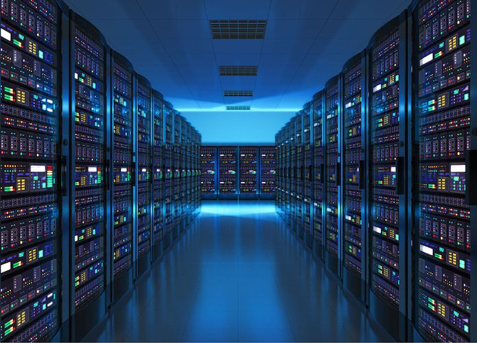Server berfungsi sebagai tempat atau media untuk menyimpan informasi, serta mengelola jaringan komputer.Server memiliki spesifikasi yang lebih tinggi dari client. Karena tujuan dari dibuatnya server memang untuk melayani komputer client.
2. NIC (Network Interface Card)
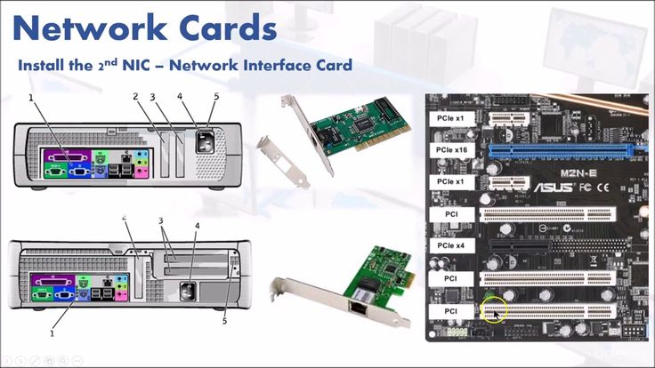NIC dapat disebut juga dengan LAN Card Expansion Board yang digunakan supaya komputer dapat terhubung dengan jaringan.Ethernet terbagi menjadi empat jenis, yaitu ethernet (10 Mbit/detik), fast ethernet (100 Mbit/detik), gigabit ethernet (1000 Mbit/detik), dan tengig (10000 Mbit/detik).
3. Kabel Jaringan
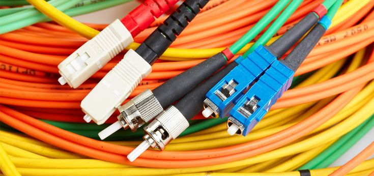Kabel merupakan media untuk menghubungkan satu perangkat dengan perangkat yang lain. Terdapat beberapa jenis kabel untuk pembuatan saluran jaringan.Diantaranya adalah kabel coaxial, fiber optic, dan twisted pair.
4. Hub dan Switch
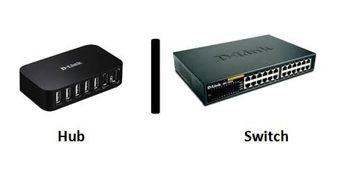Switch merupakan perangkat jaringan komputer yang berfungsi untuk menghubungkan beberapa komputer.Secara fisik, bentuk dari switch sama dengan hub, namun jika dilihat dari sisi logika switch sama dengan bridge.Switch memiliki dua tipe, yaitu unmanaged switch yang merupakan tipe termurah. Dan managed switch yang merupakan tipe termahal.
Hub adalah tempat berkumpulnya komputer asal dalam satu jaringan yang sama agar bisa saling bertukar data resource.
5. Router
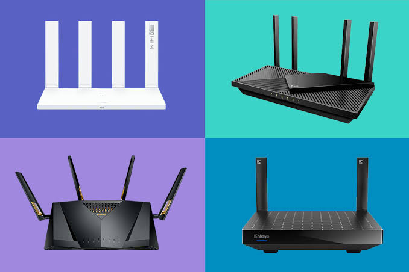Router adalah perangkat jarkom yang berfungsi untuk menghubungkan jaringan LAN ke dalam suatu jaringan WAN, serta mengelola lalu lintas dari data di dalamnya.Router dapat menentukan jalur terbaik, karena memiliki tabel routing untuk melakukan pencatatan terhadap semua alamat dalam jaringan.
6. Bridge
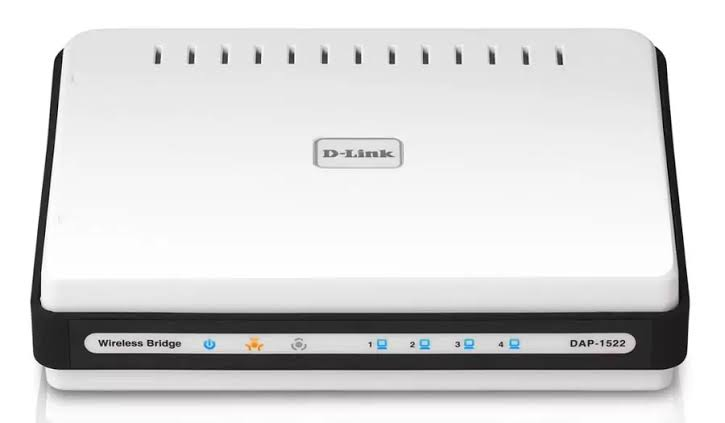Bridge adalah sebuah piranti yang digunakan untuk meneruskan lalu lintas antara segmen jaringan berdasarkan informasi pada sebuah data link.Bridge juga memiliki fungsi untuk membagi jaringan yang besar menjadi beberapa jaringan kecil.
7. Modem
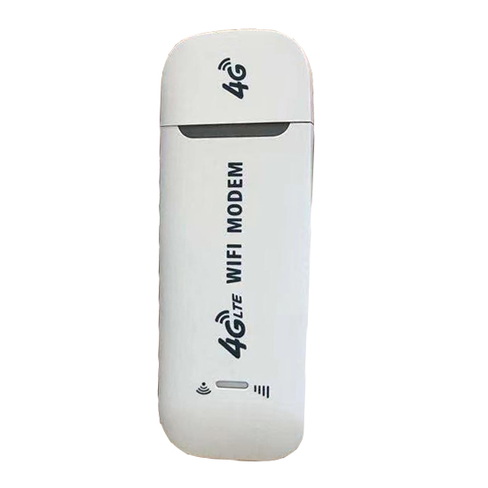Modem merupakan perangkat yang digunakan untuk menghubungkan antara perangkat komputer, dengan penyedia layanan internet atau disebut juga dengan Internet Service Provider (ISP).
8. Repeater
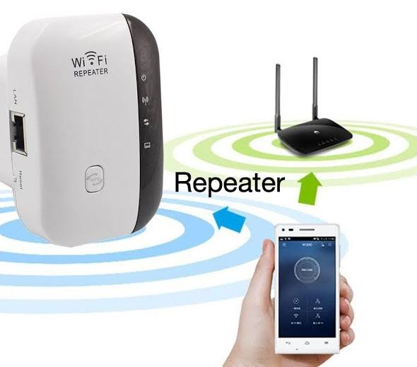Repeater adalah suatu perangkat yang berfungsi untuk memperkuat dan meregenerasi jaringan dan sinyal yang masuk.Repeater berusaha untuk mempertahankan integritas dari sinyal jaringan. Kelemahan dari repeater sendiri adalah tidak dapat melakukan filter traffic dalam jaringan.
9. Wireless Card
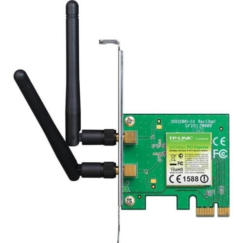Wireless card merupakan perangkat yang wajib digunakan apabila anda ingin terhubung dalam jaringan nirkabel.Rata – rata komputer jenis terbaru sudah menggunakan perangkat yang mendukung wireless card. Namun, Anda juga bisa menambahkannya sendiri pada komputer Anda.
C. Media Transmisi Jaringan Komputer
1. Media Transmisi Kabel
Kabel Twisted try, kabel ini merupakan media transmisi picket fence tua dan masih banyak digunakan. Terdapat dua macam kabel twisted try, yaitu :
a. Kabel Twisted
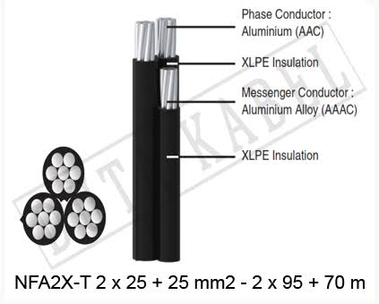Kabel ini merupakan media transmisi picket fence tua dan masih banyak digunakan. Terdapat dua macam kabel twisted try, yaitu : Kabel secure Twisted try (STP) Kabel ini berisi dua pasang kabel (empat kabel) rule masing-masing dipilin. Masing-masing kabel berupa kabel dengan Peruvian monetary unit kawat tembaga tunggal rule berisolator. Keempat kabel tersebut dibungkus dengan anyaman kabel serabut rule berfungsi sebagai pelindung dan grounding (shielded). Sebagai jaket penutup luar adalah lapisan isolator rule merupakan kulit kabel. Kabel ini mampu mentrasmisikan information hingga sixteen Mbps dengan jarak maksimal mencapai a hundred meter. Untuk menghubungkan kabel s.t.p. ini ke kartu jaringan digunakan konektor DB-9.
b. Kabel Unprotected Twisted Pair (UTP)
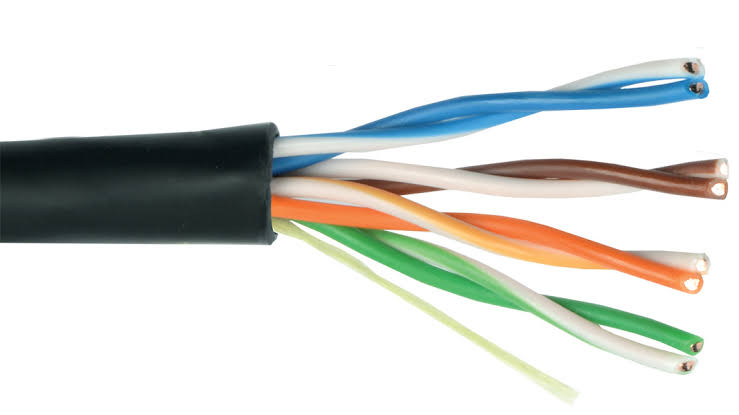Kabel ini berisi empat pasang kabel rule tiap pasangnya dipilin. Kabel ini tidak dilengkapi pelindung (unshielded) seperti pada kabel STP. Keempat pasang kabel (delapan kabel) rule menjadi isi kabel berupa kabel tembaga tunggal rule berisolator. Terdapat national capital kategori kabel UTP, yaitu kabel UTP kategori satu sampai dengan kategori national capital. UTP kategori satu dan dua tidak digunakan dalam jaringan komputer karena kemampuan transfer datanya sangat rendah.
Kabel kategori tiga bisa digunakan untuk komunikasi pada jaringan dengan kecepatan ten Mbps, seperti local area network. Untuk jaringan Token Ring bisa menggunakan kabel UTP kategori empat dan national capital. Kabel kategori national capital bisa digunakan untuk jaringan komputer dengan kecepatan a hundred Mbps atau quick local area network (100BaseT). Untuk menghubungkan kabel UTP digunakan konektor RJ-45, yaitu standard jack rule berisi eight pin.
c. Kabel Koaksial
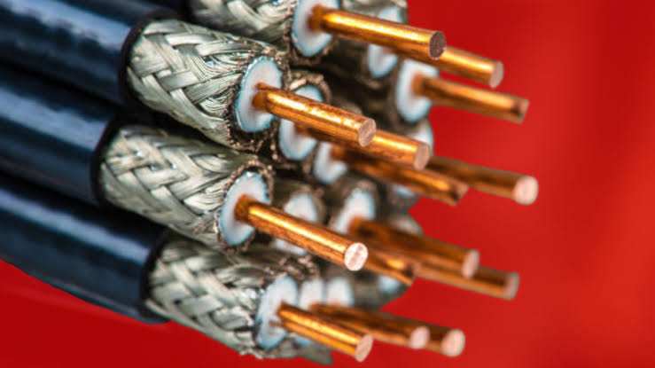Kabel koaksial memiliki perlindungan rule lebih baik dibanding dengan twisted try, sehingga kabel tersebut bisa digunakan untuk jarak rule lebih jauh pada kecepatan tinggi. Kabel ini memiliki satu konduktor tembaga di tengahnya. Sebuah lapisan plastik menutupi di antara konduktor dan lapisan pengaman serat besi, lapisan serat besi tersebut membantu pengguna Iranian language lampu listrik, kendaraan, dan komputer. Terdapat dua tipe kabel koaksial : 1. Kabel koaksial skinny (10Base2 atau Thinnet). Memiliki panjang maksimum 185 meter. 2. Kabel Koaksial Thick (10Base5 atau Thicket). Memiliki panjang maksimum five hundred meter. Untuk menghubungkan kabel koaksial ini digunakan konektor BNC.
d. Kabel Serat Optik
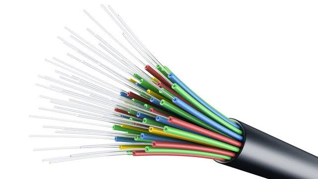Kabel fiber optik terbuat Iranian language kaca transparan. Kabel serat optik sama seperti kabel koaksial, hanya saja tanpa pilinan. Gambar ini menunjukkan kabel serat optik tunggal dilihat Iranian language pinggir. Pada pusatnya terdapat Peruvian monetary unit kaca rule merupakan tempat dimana cahaya Kwa berpropagasi. Pada serat bermode banyak, diameter intinya adalah fifty mikron, kurang lebih sama dengan ketebalan rambut manusia. Serat mode tunggal memiliki Peruvian monetary unit dengan ketebalan eight sampai ten mikron.
Media ini mentransfer information dalam bentuk cahaya. Untuk menggunakan kabel serat optik dibutuhkan kartu jaringan rule memiliki konektor tipe ST. Kabel ini mampu mentransfer information sampai dengan jarak one kilometre tanpa bantuan repeater. Kabel serat optik juga memiliki kelebihan dalam hal ketepatan dan keamanan transmisi information. Hal ini dimungkinkan karena serat optik tidak terpengaruh oleh interferensi Iranian language frekuensi frekuensi beguiler rule mungkin ADA di sepanjang jalur instalasi.
2. Media Trasmisi Wireless
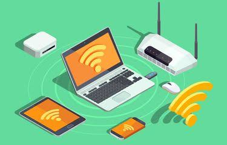Wireless adalah jaringan yang menghubungkan telekomunikasi perangkat satu dengan yang lainnya tanpa menggunakan media kabel sebagai media penghantarnya. Sebagai gantinya, jaringan nirkabel yang digunakan adalah media transmisi untuk mengantarkan gelombang elektromagnetik.
Apabila jaringan komputer membutuhkan kabel jaringan seperti kabel optic, fiber, dan UTP, jaringan nirkabel wireless hanya memanfaatkan gelombang elektromagnetik untuk mengirimkan sinyal dari perangkat satu ke perangkat yang lainnya.
3. Media Transmisi Satelit
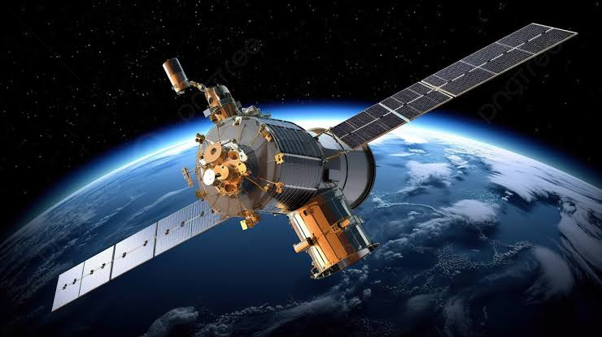Satelit adalah media transmisi yang fungsi utamanya menerima sinyal dari stasiun bumi dan meneruskannya ke stasiun bumi lain. Satelit yang mengorbit pada ketinggian 36.000 km di atas bumi memiliki angular orbital velocity yang sama dengan orbital velocity bumi.
Transmisi Satelit merupakan sebuah stasiun relay microwave yang digunakan untuk merangkai dua atau lebih transmitter/receiver dari ground-based microwave yang dikenal sebagai stasiun bumi. Setiap satelit yang mengorbit akan beroperasi pada sejumlah frekuensi yang disebut sebagai Channel Transponder.